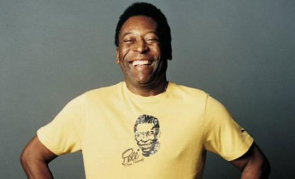
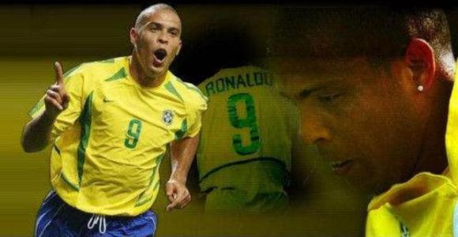
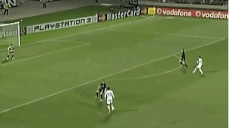
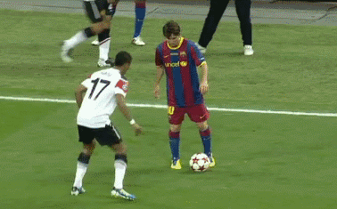
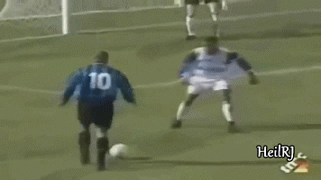
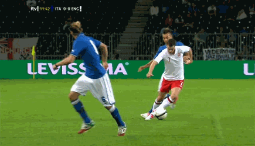

*****名人堂*****
名人堂
-
-
贝利（Pelé）
1940年10月23日出生在巴西特雷斯科拉索斯镇，前巴西著名足球运动员，司职前锋/攻击型前卫。已退役，曾获得3次世界杯冠军、2次洲际杯冠军、2次南美解放者杯冠军、11次圣保罗州联赛冠军等无数次冠军。
-

贝利（Pelé）
1940年10月23日出生在巴西特雷斯科拉索斯镇，前巴西著名足球运动员，司职前锋/攻击型前卫。已退役，曾获得3次世界杯冠军、2次洲际杯冠军、2次南美解放者杯冠军、11次圣保罗州联赛冠军等无数次冠军。
-
-
-
罗纳尔多
1976年9月18日出生在巴西里约热内卢，巴西足球运动员，司职前锋。已退役，曾获得荷甲最佳射手、西甲最佳射手、世界足球先生、欧洲金球奖、南美足球先生、2次世界杯冠军、2次美洲杯冠军等无数次奖项。
-

罗纳尔多
1976年9月18日出生在巴西里约热内卢，巴西足球运动员，司职前锋。已退役，曾获得荷甲最佳射手、西甲最佳射手、世界足球先生、欧洲金球奖、南美足球先生、2次世界杯冠军、2次美洲杯冠军等无数次奖项。
-
-
-
C罗
1985年2月5日出生于葡萄牙马德拉岛丰沙尔，葡萄牙足球运动员，司职边锋/中锋，效力于西甲皇家马德里足球俱乐部，并身兼葡萄牙国家队队长。未退役，曾获得葡萄牙足球史上最佳球员、3次世界足球先生、5次金球奖、7次欧冠最佳射手、4次欧洲金靴奖。
-
C罗
1985年2月5日出生于葡萄牙马德拉岛丰沙尔，葡萄牙足球运动员，司职边锋/中锋，效力于西甲皇家马德里足球俱乐部，并身兼葡萄牙国家队队长。未退役，曾获得葡萄牙足球史上最佳球员、3次世界足球先生、5次金球奖、7次欧冠最佳射手、4次欧洲金靴奖。
-
*****招牌动作*****
招牌动作
-
1
踩单车
踩单车指双脚不断在球的四周快速绕圈做假动作，两支脚轮番在球上方迈来迈去，以迷惑对方来突破过人。 -
2
牛尾巴过人
最早由巴西球员里罗伯托·里维利诺在比赛中使用，通过一次触球两次变向来迷惑防守球员，达到突破的目的。球员的单脚在瞬间快速的分别用外脚背和内脚背触球，这就是所谓的“牛尾巴过人”。 -
3
钟摆过人
带球形成单刀后面对出击的守门员，先将左脚向左前方跨一步，同时重心略微左移（球还在自己前方滚着，不要碰它），然后右脚也向右前方跨出一步，每一步都不要超过球，保持在球的后方，使球在自己的控制之下，然后左脚再做一次，最后，门将的重心也差不多失去了，用右脚轻轻把球往右前方拨，晃过门将后射门。 -
4
马赛回旋
马赛回旋是一个脚法华丽而又实用的个人摆脱技巧，是指在正向带球过程中以一个180度旋转顺势转身摆脱防守者，再或传或射，或是继续带球推进。整个动作需要一气呵成。尤其在双方看似均等得球机会的情况下，能出其不意地占据主动。